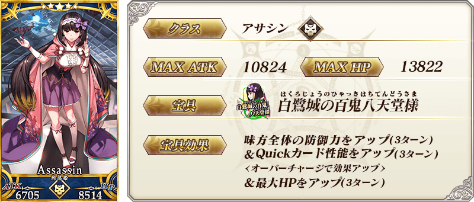
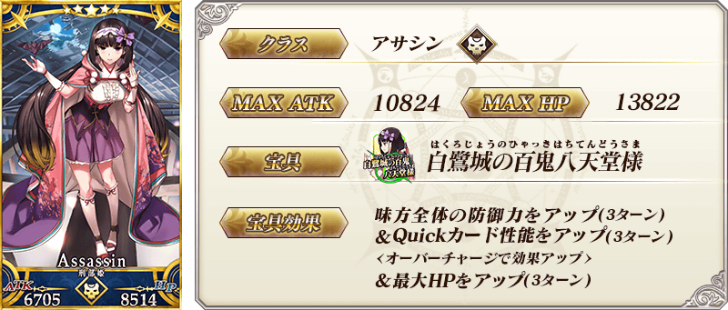
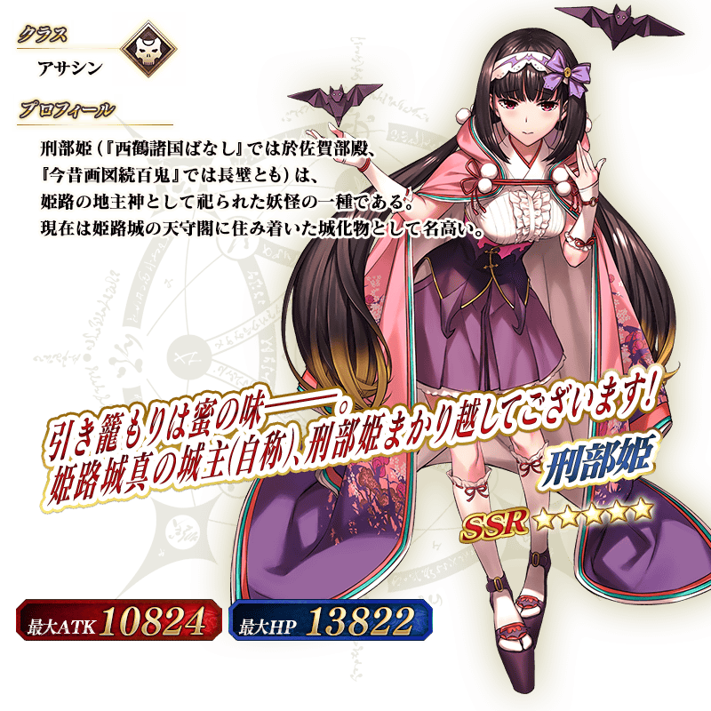
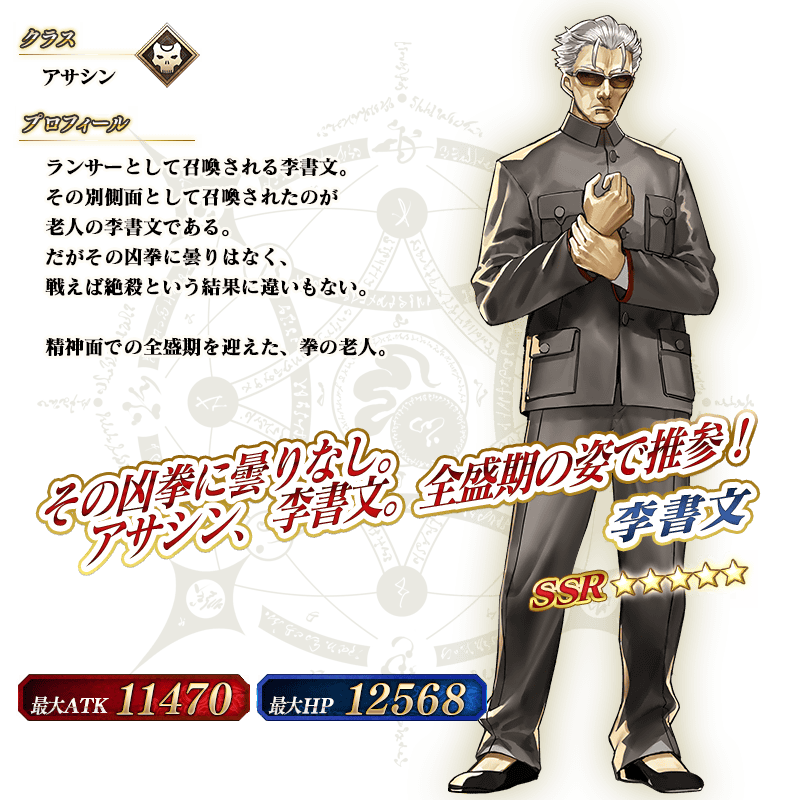

◆「幕間物語宣傳活動第9彈Pick Up召喚(每日交替)」期間◆
期間:2019年6月5日(三) 17:00～6月19日(三) 11:59
舉辦期間限定「幕間物語宣傳活動第9彈Pick Up召喚(每日交替)」！
本次從有關「幕間物語宣傳活動 第9彈」的從者之中，「★5(SSR)刑部姬」「★5(SSR)李書文(Assassin)」以每日交替Pick Up、「★4(SR)Emiya〔Alter〕」「★4(SR)不夜城的Assassin(武則天)」常駐Pick Up！
詳情請在聖晶石召喚畫面左下的召喚詳細確認。
◆有關從者的注意◆
※請注意「幕間物語宣傳活動第9彈Pick Up召喚(每日交替)」做為每日交替，「★5(SSR)李書文(Assassin)」就算Pick Up期間中也會有不被抽出的日子。
※Pick Up期間中，「★5(SSR)李書文(Assassin)」「★4(SR)Emiya〔Alter〕」就算通過各章前也能入手。
※「★5(SSR)刑部姬」「★5(SSR)李書文(Assassin)」「★4(SR)Emiya〔Alter〕」「★4(SR)不夜城的Assassin(武則天)」在Pick Up期間結束後仍會在故事召喚被抽出。
※關於隱藏真名尚未判明的從者，透過主線關卡的進行會讓從者及一部份份寶具的名稱變化。
◆有關從者真名的注意◆
在2018年12月31日(二) 23:00以後新配信的主線故事及期間限定活動、一部份關卡、宣傳活動及召喚中，會顯示隱藏真名的對象從者真名。
※已經配信的主線故事、復刻活動、一部份關卡中不在此限。
Pick Up期間中，Pick Up從者的出現機率提升！
10次召喚中確定1張★4(SR)以上和確定1位★3(R)以上的從者！
※確定★4(SR)以上包含從者和概念禮裝。
※本頁面皆為開發中圖片。會有與實際圖片相異的情況。
◆「幕間物語宣傳活動第9彈Pick Up召喚(每日交替)」Pick Up內容◆
| Pick Up期間 | Pick Up內容 | |
|---|---|---|
| 每日交替Pick Up | 全天Pick Up | |
| 6/5(三) 17:00～ 6/7(五) 22:59 |
★5 刑部姬 ★5 李書文(Assassin) |
★4 Emiya〔Alter〕 ★4 不夜城的Assassin(武則天) |
| 6/7(五) 23:00～ 6/10(一) 22:59 |
★5 李書文(Assassin) | ★4 Emiya〔Alter〕 ★4 不夜城的Assassin(武則天) |
| 6/10(一) 23:00～ 6/13(四) 22:59 |
★5 刑部姬 | ★4 Emiya〔Alter〕 ★4 不夜城的Assassin(武則天) |
| 6/13(四) 23:00～ 6/19(三) 11:59 |
★5 刑部姬 ★5 李書文(Assassin) |
★4 Emiya〔Alter〕 ★4 不夜城的Assassin(武則天) |
※請注意會以每日交替變更Pick Up的從者。
 
※上述「★5(SSR)刑部姬」的卡面為靈基再臨第2階段。

※上述「★5(SSR)刑部姬」的卡面為靈基再臨第2階段。
 ※上述「★5(SSR)李書文(Assassin)」的卡面為靈基再臨第2階段。
※上述「★5(SSR)李書文(Assassin)」的卡面為靈基再臨第2階段。


 ※上述「★5(SSR)刑部姬」的立繪為靈基再臨第2階段。
 ※上述「★5(SSR)李書文(Assassin)」的立繪為靈基再臨第2階段。
介紹「★5(SSR)刑部姬」「★5(SSR)李書文(Assassin)」「★4(SR)Emiya〔Alter〕」「★4(SR)不夜城的Assassin(武則天)」的寶具演出！
在「Fate/Grand Order」官方網站內的公告中，以影片公開寶具演出，敬請確認。
其他還有，「幕間物語宣傳活動 第9彈」同時舉辦！
關於詳情，請自下述橫幅確認。